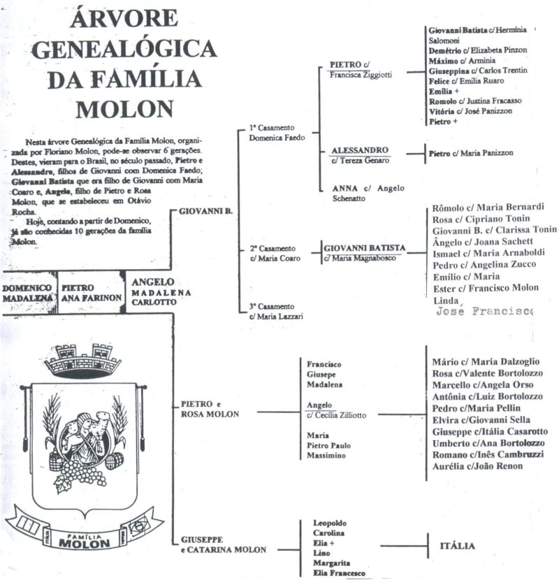
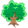
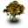

Genealogia
|  |
A elaboração de uma árvore genealógica de uma família pequena é até fácil. Mas quando os componentes atuais já são mais de 8 mil fica um pouco complicado. Para facilitar o trabalho, dividimos em grandes troncos a partir do casal imigrante conhecido, que foram identificados em números romanos. Seus filhos, alguns emigrados da Itália, receberam o número simples. Portanto o primeiro algarismo é o número dos filhos do casal imigrante. O segundo já seria dos netos. Assim: l.5 quer dizer o 5º filho do tronco nº 1. Há uma série de casamentos entre os diversos troncos, uns mais próximos e outros de várias gerações. |
{kind=link}
Procure a sua família nos arquivos disponibilizados, clicando no ícone da árvore. Envie as alterações (nascimentos, falecimentos, casamento, ...) para o e-mail arvorefamiliamolon@gmail.com.
Existem famílias que são citadas duas vezes na árvore (por parte de pai e mãe). A sequência da família está registrada na parte paterna.
Imigrantes e suas Descendências
- PIETRO MOLON E FRANCISCA ZIGGIOTTI. Trav. Pinhal - Otávio Rocha
- ALESSANDRO MOLON E TEREZA GENARO . Trav. Pinhal - Otávio Rocha 
- GIOVANNI BATISTA MOLON E MARIA MAGNABOSCO - Farroupilha/RS
- ÂNGELO MOLON E CECÍLIA ZILIOTTO - Trav. Pinhal - Otávio Rocha 
-
 ANTÔNIO MOLON e REGINA GHIOTO - Trav. Marcolino Moura - Otávio Rocha
ANTÔNIO MOLON e REGINA GHIOTO - Trav. Marcolino Moura - Otávio Rocha - GIROLAMO MOLON e CATARINA LAGHETTO - Linha Sertorina - Farroupilha/RS
- LUÍS MOLON e ROSA FERRARI - Tubarão/SC
- LUIGI MOLON e ROSA - Curitiba/PR
- ANTONIO MOLON e PASCHOA BUASCARIN - Americana e S. Bárbara D’Oeste/SP
- GIUSEPPE MOLON e MARIA VERLATTO - São Bernado do Campo/SP
- GIORDANO MOLON e AMÁBILE MOLON - São Paulo/SP
- FELÍCIO MOLON e SANTA RODELLA- São Paulo/SP
- GIOVANNI BATISTA MOLON e MARIA MOLON - Porto Alegre
- PE. GUERRINO MOLON - Castro/PR